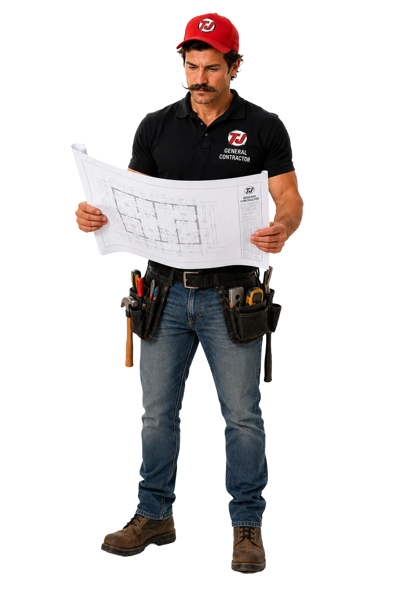

Contractor websites that
book jobs.
Contractor website design should help a customer confirm three things fast: you handle the job, you work in their area, and there is an easy way to call or request an estimate. Toughjobs builds that path around your real services, proof, brand, and sales process.
Website design built to
win local jobs.
Business owners in Peoria, Davenport, and Dubuque don't need another basic website. They need a site that helps customers find them, trust them, and contact them. That's where Toughjobs is different.
We design professional websites for contractors, home-service companies, and local trade businesses that depend on real leads — phone calls, estimate requests, and booked jobs. We understand how people search for plumbers, roofers, electricians, landscapers, remodelers, painters, and HVAC companies in their area. Your website shouldn't just look good. It should work like a 24/7 sales tool.
Every Toughjobs website is built with local SEO, strong branding, clear messaging, and conversion-focused design in mind — structured to help you show up in Google for your city and the surrounding service areas. Mobile-friendly layouts, fast-loading pages, strong calls-to-action, trust sections, service pages, review areas, and photo galleries that tell customers why to choose you.
We focus on business results, not just pretty design. Get found, get trusted, and get contacted — in Peoria, Davenport, Dubuque, and beyond.

Pick your trade — see a site built for it.
Each demo is a real, conversion-focused layout tailored to that trade. Choose yours below.
From handshake to live in four weeks.
A clear, fixed process — no mystery, no scope creep.
Discovery
We map your services, service area, and the jobs you want more of.
Design
Mobile-first layouts built around the call button, not stock photos.
Build
Fast, clean code with local schema and lead forms wired in.
Launch & Own
You get full access — analytics, code, domain. It's yours.
A site that works while you're on the job.
More booked calls
Phone number in 6+ spots and forms that actually convert mobile traffic.
Lower cost per lead
A fast, optimized site cuts the ad spend needed to get the same calls.
Zero rental fees
You own everything. No $200/mo platform tax forever like Wix or template mills.
DIY vs. agency vs. Toughjobs.
Where your money actually goes.
| DIY | Typical Agency | Toughjobs | |
|---|---|---|---|
| Upfront cost | $0–500 | $5,000–15,000 | $500–$5,000 |
| Monthly fee | $30–300/mo forever | $200–500/mo retainer | $18–$200 |
| You own the code | No | Sometimes | Always |
| Built to convert | No | Maybe | Engineered for it |
| Load speed | Slow templates | Varies | <2s guaranteed |
DIY builders feel cheap until you add years of monthly fees and lost leads from a slow, generic site.
What belongs in a useful performance record.
Baseline
Record the starting assets, access, tracking, market, budget, and operating constraints before work begins.
Work log
Document what changed, when it changed, who approved it, and what still depends on the client or another vendor.
Verified outcome
Connect calls and forms to lead quality or booked work when the business can supply that information. Never substitute a stock quote for proof.
A contractor website should answer the hiring questions
Website design for contractors starts with the way a customer hires. A visitor needs to see the service, service area, relevant proof, and next step without digging through a generic company story. The page structure should support that decision before decorative effects or extra features are added.
We map the jobs you want, then build a page for each real service. Project photos, reviews you are allowed to publish, license details where relevant, and direct contact options sit close to the claims they support. The website also connects to local SEO for contractors and tracked paid campaigns instead of operating as a separate brochure.
What is included in a Toughjobs website build?
- Discovery around services, service area, customers, and lead handling.
- Mobile-first page planning with a clear call and estimate path.
- Service-page copy, on-page SEO, analytics, and form or call tracking setup.
- Launch support and a handoff covering the site, domain, and access you own.
Review the trade website examples to see how the structure changes by vertical, then request a website teardown for your current site.
Contractor websites that book jobs. FAQ
How much does contractor website design cost?
Cost depends on the number of real services, the content and photography already available, required integrations, and the condition of the current site. Toughjobs defines the page list, deliverables, ownership, and fee before work starts so the proposal can be compared without hidden platform charges.
Will I own the website?
The proposal identifies what you own and which outside services require separate accounts. Toughjobs is built around client-controlled domains, analytics, content, and access. Any hosting, software, stock media, or licensed component is documented during the handoff instead of being buried in a proprietary rental platform.
Which website platform do you use?
The platform follows the job. A straightforward service site may need a conventional content management system, while a custom calculator or workflow may need a different build. The recommendation is based on editing needs, performance, integrations, and long-term maintenance, not a single platform sold to every contractor.
What do you need from my company?
The best inputs are an accurate service list, service area, phone and email, brand files, real project photos, reviews you may publish, license or insurance details where relevant, and someone who can approve copy. Missing materials are identified early so they do not hold up launch.
Let's build you a lead machine.
Book a free strategy call and we'll review your current campaigns (or build a plan from scratch) and show you where the money's leaking.
CONTRACTOR WEBSITE DESIGN THAT ACTUALLY BOOKS JOBS
A contractor website's only job is to turn a stranger on a phone into a scheduled call, a quote request, or a rung phone line. If it isn't doing that within a second and a half of loading, it's costing you work — no matter how nice it looks in the mockup.
WHY MOST TRADE CONTRACTOR WEBSITES FAIL
Nine out of ten contractor sites we audit have the same problem: they were built by a graphic designer, a nephew, or a template mill that has never once sat with a homeowner deciding between three quotes at 8 p.m. on a Tuesday. They load slow. They bury the phone number. They lead with a stock photo of a stranger in a hard hat instead of the actual crew, the actual trucks, the actual jobs. They read like a brochure when they should read like a decision.
The second failure is structural. A contractor site with one "Services" page and a contact form cannot rank, cannot convert, and cannot compete with the shop down the road that has fourteen individual service pages, each one written for the exact search a homeowner types when their water heater is leaking into the basement. Google reads pages. Homeowners buy from pages. If you don't have the pages, you don't exist in either conversation.
WHAT A CONVERTING TRADE WEBSITE MUST HAVE
Sub-2-second load time on cellular
Most of your traffic is on a phone, on LTE, standing in a driveway or a basement. If the site takes four seconds to paint, half those people are gone before the hero image renders. We build on lean stacks — compressed images, deferred scripts, no bloated page builders — and we test on throttled connections, not on the fiber line in a design studio.
Click-to-call above the fold, on every page
The phone number is not a footer element. It's the primary conversion. It needs to be tappable, visible on scroll, and wired to call tracking so you know which pages, which ads, and which keywords are driving the ring. If a visitor has to hunt for the number, they'll hunt for a competitor instead.
A page for every service, every city
One "Plumbing" page won't rank for "water heater replacement Bettendorf." You need the service page, the city page, and — when it makes sense — the service-in-city page. This is the unglamorous part of contractor web work, and it's the part that separates sites that get traffic from sites that get compliments.
Trust signals a homeowner actually reads
Real crew photos. Real job photos with dates and towns. License and insurance numbers displayed, not hidden. Google reviews pulled live, not screenshotted from 2021. Guarantees written in plain English. BBB, manufacturer certifications, and any local affiliations — because a homeowner writing a $12,000 check wants to know you'll still be answering the phone in three years.
WHAT DOES A CONTRACTOR WEBSITE COST?
| Tier | Typical Investment | What You Get |
|---|---|---|
| Template Refresh | $1,500 – $3,500 | Existing site cleaned up, mobile-fixed, speed-tuned, CTAs added. Good stopgap, not a growth tool. |
| Standard Custom Build | $5,500 – $9,000 | 10–15 pages, service pages, one city hub, on-page SEO, call tracking, forms wired to CRM. |
| Multi-Service Build | $9,000 – $15,000 | 25–40 pages, full service + city matrix, project galleries, review integration, blog engine. |
| Franchise / Multi-Location | $15,000 – $30,000+ | Location manager, per-branch schema, local landing systems, staff training, ongoing dev retainer. |
| Care & Growth Retainer | $400 – $1,200/mo | Hosting, security, monthly content, conversion tuning, page adds as the business grows. |
WHAT TO LOOK FOR IN A CONTRACTOR WEBSITE AGENCY
You are not hiring a designer. You are hiring a team that understands how a homeowner or facility manager makes a hiring decision on a phone in under ninety seconds. The portfolio should be full of contractors, not restaurants and dentists. The conversation should start with your service area and your call volume, not your color preferences.
- Portfolio has at least 10 live trade contractor sites you can visit today
- Owns the SEO strategy — doesn't hand you off to a separate vendor after launch
- Bakes call tracking, form tracking, and analytics in on day one, not as an upsell
- Writes the copy in-house or with a trade-specialist writer — not AI dropped into a template
- You own the domain, the hosting login, and the site files — no hostage situations
- Publishes real load-time and Core Web Vitals numbers, not vague "fast and responsive" claims
Toughjobs builds contractor websites for trade contractors across the Midwest. Talk to us about your market — no pitch, just a straight read on what would actually move the needle for your business.
FREQUENTLY ASKED QUESTIONS — CONTRACTOR WEBSITES
How long does a contractor website take to build?
A standard custom build runs 6–10 weeks from kickoff to launch, assuming we get photos, licensing info, and content approvals back inside a week. Larger multi-service builds run 10–16 weeks. Rush jobs are possible but usually mean cutting service or city pages we'd otherwise recommend.
Do I need a new site if mine is only a few years old?
Not always. If the foundation is clean — modern framework, decent speed, editable pages — we can often refresh copy, add service pages, and rebuild the mobile experience for a fraction of a full rebuild. If it's a page-builder site on an old theme with 30 plugins, replacement is usually cheaper than triage.
Will you write the copy or do I have to?
We write it. You'll answer a 30-minute intake call about your service area, your typical job, your differentiators, and your best customer, and our writers turn that into pages built to rank and convert. You approve every page before launch.
Can I edit the site myself after launch?
Yes. We build on WordPress or a headless equivalent with a clean editor, and we give you a 20-minute walkthrough of how to update photos, add a testimonial, or spin up a new blog post. Bigger structural changes usually flow through us on retainer.
Will the site rank in Google once it launches?
The site will be built to rank — clean code, proper schema, service and city pages, fast load times. Ranking itself is a function of ongoing SEO, backlinks, reviews, and content. A great site is the foundation; SEO is the fuel. Most contractors see meaningful movement within 90–180 days of launch when both are in place.